The motor system
Learning Objectives
After reading this chapter, you will understand:
- the organisation of the central regions and pathways involved in motor control
- the role of different regions for organising and controlling movement
- that motor systems are modified during development and by learning
- how motor systems break down when components are damaged.
Movement is key to every aspect of our lives. From breathing to walking, writing, or frowning, each behaviour is controlled by the motor system. So, understanding how movement is generated is an important step to understanding behaviour.
Despite being so ‘natural’, the generation of movement is a very complex task. Depending on the goal, the brain computes current and previously stored information to generate instructions and commands that are transformed into movement. This transformation is achieved at the neuromuscular junction, where a motor neuron synapses on a muscle governing its state of contraction. Therefore, to understand how purposeful movements are generated we need to understand how the nervous system is organised and how different regions communicate to control the correct sequence of contraction of hundreds of muscles that will produce the appropriate movement.
In this chapter we will discuss how studies have revealed the relationship between cortical organisation and function for the control of voluntary movement. We will look at how the spinal cord, which contains the motor neurons, is more than just a passive relay of brain information into muscle contraction. Finally, we will evaluate the function of the cerebellum and the basal ganglia for the organisation of movement. As we go along, we will discuss how the motor systems are modified during development and learning. We will also look at what happened when certain components are damaged and how treatments or the ability of certain regions to change (plasticity) can help recovery.
Organisation of the motor system
The motor systems are used for multiple roles. They are involved in moving through and manipulating the world as well as for verbal and non-verbal (gesture) communication. They allow us to maintain posture and balance and control the contraction of the smooth muscles involved in autonomic functions like breathing and gut movements. Finally, they play a role in sensation, for example controlling the saccadic movements of the eyes as we visually track a stimulus. Despite the diversity of movements we perform, motor control is often considered as simple, probably reflecting that movements are seemingly effortless and largely unconscious. However, even simple movements require significant computations to coordinate the action of multiple muscles.
For example, imagine that you want to pick a ripe peach (Figure 5.1). This movement requires the concerted action of several regions of the nervous system, each with a specific role. Once you have decided to pick up the peach, visual information processed in the visual cortex is used to locate the fruit. This information is transmitted to the motor regions of the frontal lobe where the movement is planned, and command signals are sent. The commands are carried on to the spinal cord, which is responsible for generating the movement through activation of motor neurons. The coordinated activity of motor neurons induces the contraction and relaxation of muscles in the arm and hand that allow the peach to be grasped. Now, a ripe peach is a very delicate fruit, and the correct amount of pressure needs to be applied to detach the fruit while avoiding bruising it. Sensory receptors in your fingers relay tactile and proprioceptive information back to the spinal cord and the somatosensory cortex. From there, the information reaches the motor cortex to confirm that you are grasping the fruit. Other areas are involved during this movement; the grasp force is judged by the basal ganglia, and the cerebellum helps in regulating the timing and accuracy of the movement.
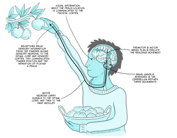
Fig 5.1. Schematic diagram of the steps and regions involved in a seemingly simple movement like picking a ripe peach
The motor hierarchy
In the diagram of interactions between different regions of the nervous system just described (Figure 5.1), each component controls a particular function. These regions are organised hierarchically.
The forebrain regions, involved in taking the decision, command lower functional areas like the spinal cord to execute the movement. Parallel processing allows us to simultaneously produce other movements, like maintaining posture while singing or walking. Finally, there is a level of independence in the function of these brain areas, which can co-ordinate complex activity in multiple muscle groups having received relatively general commands. This allows movement to happen rapidly, precisely and without conscious control.
Strategies to control movement
The concept behind how movement is controlled to be efficient has been debated for quite some time. When we execute an action, sensory information is used to inform us about the movement, the position of the body and the surrounding environment.
This information can be processed as the movement is progressing allowing us to adjust it. This is called feedback control, where the output is monitored by various sensory systems and signals are relayed into the CNS to inform regions that generate motor outputs.
However, this model is limited to slow movements and sequential actions, since the processing of sensory feedback is relatively slow. For example, when catching a ball it may take 700 milliseconds to respond to visual clues, but the movement only takes between 150 and 200ms. This means that another motor control mechanism must be used for fast, ballistic movements.
In feedforward control, the optimal movement is predicted from current sensory conditions and from memory of past strategies. For example, if you open your front door and see snow and ice you will walk differently to how you would on a sunny day; you will take small steps, walk slowly, and hold your arms out for balance, because you know that there is a risk of slipping and falling. If we return to our ball example, knowing the initial conditions of the arm and hand and being able to predict the ball trajectory are used to choose a stored motor programme to catch the ball. A general feature of feedforward control is that it improves with learning.
Feedback and feedforward controls are not mutually exclusive and are combined to optimally generate coordinated movements.
To understand how the regions of the central nervous system work together to plan and command movements, we will now analyse the role of the main regions, starting with the forebrain.
Key Takeaways
- Motor systems are used for multiple roles
- Motor systems consist of several regions that are hierarchically organised
- Motor and sensory systems work together to generate effective movement.
The forebrain and initiation of movement
In the frontal lobes of the brain, specific regions such as the prefrontal cortex, premotor cortex, and primary motor cortex contribute to movements in unique ways.
The prefrontal cortex is critical for making the decision to execute a particular action. For example, if you decide to grab your mobile phone to call a friend, it is the frontal cortex that reacts to that goal and instructs the motor system to initiate movement. The premotor cortex receives information from the prefrontal cortex and prepares the required motor sequences, selecting the movements that are most appropriate for the action in the current circumstances. In this case, you will need to retrieve the phone and unlock it with a passcode, moving your fingers from one number to another in an organised sequence and following a specific memory. The information about the motor sequence to be executed is conveyed to the primary motor cortex that produces the required movements by muscle contraction and relaxation. Sensory input from the posterior parietal cortex, for example about where the phone and your fingers are, also shapes this process.
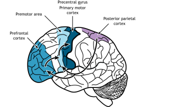
The motor cortex
Evidence on the organisation of the motor cortex has been very influential in thinking about its function. Wilder Penfield was a neurologist who pioneered neurosurgery for the treatment of epilepsy that could not be controlled with medication. Through surgical interventions, he removed regions of the brain from which the seizure originated. To avoid catastrophic consequences, during surgery he electrically stimulated local regions of the nervous system in awake patients and recorded the results. He found that different parts of the primary motor cortex controlled different muscles (Figure 5.3) (Penfield & Boldrey, 1937).
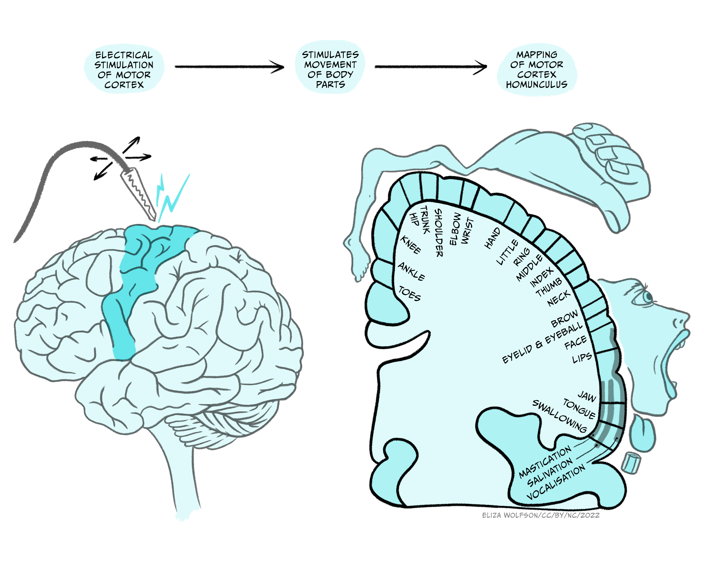
This led to the drawing of a homunculus, which is a topographical representation of how the primary motor cortex contains a motor map of the body. As with sensory maps, body parts are not equally represented. Areas that need greater motor control – hands, fingertips, lips, and tongue – are controlled by disproportionately larger regions of the motor cortex compared to other body parts.
The homunculus is a simplification and Penfield himself noted that the facial, arm/trunk and leg regions overlap. He attributed this to variability in brain size and the lack of precise stimulation, but more recent analyses have shown a fractured somatotopic organisation that sees neurons controlling movement of facial, arm/trunk and leg movements intermingled. This has generated controversy: does the primary cortex control muscles, or movement?
Modelling movement
A more detailed analysis of the relationship between the primary motor cortical areas and the movement they generate has helped in making sense of how motor cortex works.
From an anatomical point of view, there is evidence that single cortical neurons make direct connections with motor neurons that innervate multiple muscles that work together (they are synergistic) to produce a particular movement.
Furthermore, finger representation is found in several regions of the cortex. This suggests that the fingers, which are involved in so many actions, can be linked to particular tasks and activated independently in different contexts.
These observations point to an organisation of the primary motor cortex to control movement, rather than the contraction of individual muscles. Different groups of neurons are grouped together, providing ‘libraries’ of muscle synergies that can be used for different movements or parts of movements. For example, a region of this cortex will be involved in activating the muscles required for picking up a marble between thumb and index finger.
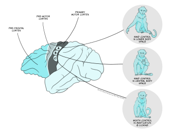
Recent discoveries have shown there is substantial complexity in the movements that can be controlled by the motor cortex. Using longer electrical stimulations of the motor cortex (half a second) in macaque monkeys, Michael Graziano and colleagues have shown that long (half a second) electrical stimulations of motor cortex in macaque monkeys can evoke complex actions (Figure 5.4) (Graziano et al, 2016). These actions represent movements usually used by the monkey (ethologically relevant). For example, stimulating one area of the motor cortex repeatedly and reliably induced hand-to-mouth action (E). They also found sites evoking apparent defensive movements (F) or reach to grasp (G). Each ethologically relevant type of action is organised in zones, and ablations to these zones affect the ability to generate the corresponding movements. This zonal organisation of complex movements has been termed an action map.
Plasticity in the motor cortex
The cortical areas involved in the control of movement (prefrontal cortex, premotor cortex, and primary motor cortex) show an amazing plasticity. This means that the connections between neurons and their strength can change, new ones being made and old ones broken.
This is particularly obvious during development, when the nervous system is highly malleable, allowing for the maturation of new behaviours like walking for a toddler. In humans, changes in the motor map also occur with the acquisition of skilled movement, like writing or playing the violin. The effects have been studied in detail in animals. At the beginning the motor map is absent but as the skill is learned the map is refined and becomes more precise. The changes are centred in regions that control the muscles involved in the learnt skill: each finger is controlled by a very defined region in the violinist primary motor cortex (Elbert et al., 1995).
This plasticity has also profound implications when the motor areas in the cortex are damaged. If a monkey damages a cortical motor area controlling its paw and does not undergo rehabilitation, this paw becomes paralysed. After a few months, an analysis of the motor cortex in that animal shows that the area controlling the monkey’s paw (wrist and digits) has become smaller, while the lateral areas controlling the elbow and shoulder have enlarged. If animals are not allowed to use their good hand, by use of a cast for example, they are forced to use their bad hand. This is a form of rehabilitation as the areas that control the hand and digits then retain their size and the monkey retains some ability to move its hand (Nudo et al., 1996).
These experiments, performed in animals, have permitted the development of new rehabilitation treatments for humans. Amongst them, constraint-induced movement therapy helps improve the deficit that results from different types of substantial damage to the central nervous system (CNS), such as stroke, traumatic brain injury, multiple sclerosis, cerebral palsy, and certain paediatric motor disorders (Taub, 2012). For example, in stroke patients, transcranial magnetic stimulation has been used to stimulate the damaged motor cortex or to inhibit the intact motor cortex in the opposite hemisphere and improve function (Ziemann, 2005).
The corticospinal tract
The main afferent route from the primary motor cortex to the brainstem and spinal cord is via the corticospinal tract. Most of the axons originate from pyramidal neurons in layer V of the cortex, but also include tracts from the premotor cortex and sensory cortex. The axon bundle descends into the brainstem where it sends several collaterals to brainstem nuclei and divides into two main branches. The opposite-side lateral tract controls movement of limbs and digits on the opposite side of the body. The same-side tract controls movements closer to the midline on the same side of the body, in particular movements of the trunk and shoulders that influence body orientation (Figure 5.5).
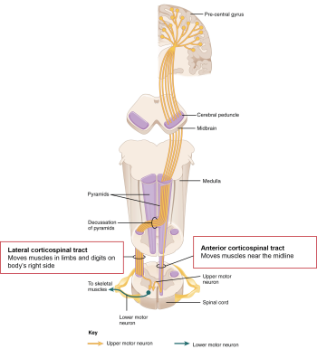
Key Takeaways
- The forebrain organises the initiation of movement: the prefrontal cortex plans, the premotor cortex organises and the motor cortex sends commands to produce movement
- The primary motor cortex contains a motor map of the body: the homunculus
- Motor cortical organisation represents simple and ethologically relevant movements
- Plasticity is fundamental for learning new motor skills and for rehabilitation
- Descending corticospinal tract conveys inputs to the executive circuits in the brainstem and spinal cord.
The spinal cord
The spinal cord plays a fundamental role for the execution of movement. It contains the motor neurons responsible for muscle contraction. It receives descending input from higher brain regions and the sensory feedback from muscles and from touch receptors. It generates the simplest movement: the reflex contraction. It also contains the circuits that control the generation of rhythmic movements, like walking or chewing. When it is lesioned, voluntary movement is impossible below the level of the damage.
A cross-section of the spinal cord [Figure 5.6a] reveals the outer white matter that contains the axon tract and the central grey matter where the nuclei of neurons from the spinal cord are located. The grey matter is divided into the dorsal horn that relays sensory inputs to the spinal cord and the brain, and the ventral horn that contains the motor neurons. In the intermediate grey matter, the interneurons that relay inputs to motor neurons are found. The spinal cord is divided into four sections: cervical, thoracic, lumbar and sacral, each comprising several segments (Figure 5.6b, left image). Limb muscles are supplied by nerves from several segments, reflecting the complexity of the movement generated.
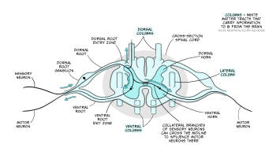

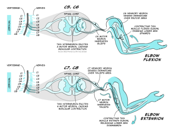
The arm moves thanks to the coordinated stimulation of motor neurons that drive the contraction of extensor and flexor muscles.
For example, elbow flexion is mediated by cervical segments C5 and C6, while its extension is mediated by C7 and C8 (Figure 5.7). Sensory inputs from single strip of skin are supplied by individual spinal nerves, reflecting the importance of localised sensation.
The motor neurons
The motor neurons are the final output elements of the motor system. Each motor neuron innervates as many as 150 fibres of a single muscle (Figure 5.8a). This collection of fibres innervated by a single motor neuron constitutes the smallest unit of contraction, and was named the ‘motor unit’ by Sir Charles Sherrington (Nobel Lecture, December 12, 1932). Most muscles comprise hundreds of motor units.
By controlling the activity of each motor neuron and the number and type of motor units recruited, the type of movement and muscle force can be adjusted (Figure 5.8b).
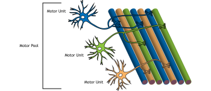
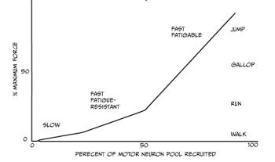
Three types of motor units exist:
- Slow motor neurons generate a low and sustained tension, and are recruited first. They provide enough strength for standing or slow movements.
- Fast units generate more strength and are recruited for more intense activity. The fast fatigue-resistant units provide force for intermediate activity like walking or running.
- Finally, when intense movements are done like jumping, the fast fatigable units will be recruited.
The strength of contraction of each motor unit can also be modulated by changing the firing frequency of the motor neurons at the neuromuscular junction (NMJ).
The neuromuscular junction
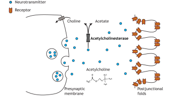
The neuromuscular junction (NMJ) is the chemical synaptic connection between the terminal end of a motor neuron and a muscle (Figure 5.9). It allows the motor neuron to transmit a signal to the muscle fibre, resulting in muscle contraction. It begins when an action potential reaches the axon terminal of the motor neuron. In vertebrates, the neurotransmitter acetylcholine (ACh) is released from the axon terminal and diffuses across the synaptic cleft, where it binds to the nicotinic acetylcholine receptors (nAChRs) on the post-synaptic site on the muscle fibre. nAChRs are ligand-gated ion channels. ACh-binding opens the ion channel allowing Na ions into the muscle cell, depolarising the membrane At the muscle, this depolarisation is termed the ‘endplate potential’ (contrasting to the EPSP at a neuron to neuron synapse). This endplate potential causes an action potential in the muscle fibre that eventually results in muscle contraction. To prevent sustained contraction of the muscle, ACh is degraded in the NMJ by acetylcholinesterase.
The NMJ is the site of many diseases that affect the way messages are transmitted from the nerves to the muscles. For example, in congenital myasthenic syndrome, proteins required for synaptic transmission at the NMJ are mutated so an action potential in a motor neuron is less able to cause muscle contraction. This condition produces muscle weakness and impacts on mobility to different degrees, depending on the type of genetic mutation. Symptoms range from drooping eyelids and fatigue, to affecting breathing and other essential functions in the life-threatening forms of the disease. How to modulate the efficacy of NMJ transmission is a very active area of research to help patients with this syndrome.
Generation of rhythmic movements
As we already mentioned, the spinal cord is not only a relay site from the brain to the muscles, but also plays a fundamental role in the generation of rhythmic patterns of movement, like walking or running. This means that circuits located in the spinal cord are capable of coordinating the concerted actions of several muscles. More than one hundred years ago, Charles Sherrington (1910) and Graham Brown (1911) performed the first experiments that showed that the spinal cord, disconnected from the brain, could produce the rhythmic movement of stepping in cats. After years of controversy and experimentation in many species, it is now accepted that the spinal cord contains circuits that generate rhythmic movements like chewing or walking independently of the inputs it receives. These circuits of interneurons are called Central Pattern Generators (CPG) and they ensure the coordinated action of muscles, so that extensors and flexors work in concert to produce fluid movements (Figure 5.7).
While the CPGs can generate rhythmic movements, they require pre-motor inputs that select and coordinate the types of motor neurons needed. For example, walking and running require the contraction of muscles in the legs at different phases and with different intensities. During walking the duration of the stance is longer and the legs are less bent in comparison to running (Figure 5.10). The activity of the CPG that controls the timing and coordination of muscle contraction is influenced by descending inputs from higher centres (mostly primary motor cortex) that send the signal to select between gaits. Additionally, sensory feedback from the muscles (proprioception) and the environment shape the correct execution of movements (Figure 5.10b, bottom).
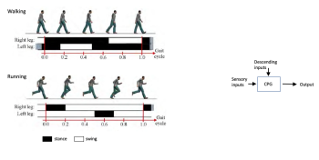
Spinal cord injury
The understanding of the importance of the circuits located in the spinal cord is used to help patients with spinal cord injury. When the spinal cord is severed, the circuit below the lesion site cannot be activated. When the lesion occurs at lumbar level (C4-C6), the arms and legs are paralysed, resulting in quadriplegia. If the lesion is at thoracic level, the legs are paralysed, resulting in paraplegia (refer to Figure 5.6c).
However, it is possible to improve the recovery of locomotion by training. During step training (Figure 5.11), a patient’s body weight is supported by a harness over a treadmill. Therapists and technicians move the legs and joints of the patient to simulate normal walking. As the patient walks, sensory inputs from the legs, the sole of the foot and the trunk are repetitively sent to the spinal cord. This trains the spinal cord circuit, and walking and standing are slowly relearned. After several weeks of training, most patients can generate spontaneous walking when placed on the treadmill with support. This enhances health and well-being. When patients have incomplete spinal cord injury, it can be the beginning of recovery since it also stimulates the rewiring of descending inputs from the brain.

See also Locomotor Training video on YouTube: https://www.youtube.com/watch?v=diZLK32DUts
Key Takeaways
- The spinal cord has an organised structure
- The connection between a motor neuron and several muscle fibres comprises a motor unit – the smallest unit of motor output. Each muscle contains many motor units
- The activity and recruitment of motor units influences the motor output
- The neuromuscular junction is the cholinergic synapse between the motor neuron and the muscle
- The spinal cord has neural circuits capable of generating rhythmic movements like walking and chewing
- Training the spinal circuits has a beneficial effect for the treatment of spinal cord injury patients.
The cerebellum and the control of skilled movement
The cerebellum comprises between 10 and 20% of the brain volume, but it contains 50% of its neurons. This disparity is possible because the cerebellum is a highly organised structure that allows the dense packing of neurons. It is located on the back of the brain and just above the brain stem. The cerebellum is divided into several regions, each with specific functions and connections to different parts of the brain (Figure 5.12).
The cerebellum contains sensory and motor components, but it is not necessary for the direct execution of movement. Rather it plays a role in the coordination and planning of movement, which are affected in patients with cerebellar lesions.
The first insight into the role of the cerebellum was obtained by the neurologist Gordon Holmes (Holmes, 2022). After World War 1, he analysed the behaviour of soldiers that had been wounded by bullets and and presented with localised damage to the cerebellum. He observed that despite not presenting sensory loss, the movement of the patients was affected: they presented cerebellar ataxia (lack of coordination).
The patients presented weakness (hypotonia), showed inappropriate displacements like overreaching (dysmetria) and struggled to make rapid alternating movements (dysdiadochokinesis). Their movements seemed to be de-composed, with lack of coordination of different joints.
All these defects pointed to a role of the cerebellum in the construction of movement, contributing to coordination, scaling, timing and precision.
Interestingly, one of Holmes’ patients described that ‘the cerebellar lesion meant that it was as if each movement was being performed for the first time’ (Holmes, 1922). This and other observations led to the current view that the cerebellum enables predictive motor commands to be made. This means that over repeated reiterations of a movement – for example, hitting a tennis ball with a racquet – an internal model of the movement is learnt: a motor programme. The next time you want to hit the ball, this cerebellar representation is used to generate and construct the appropriate movements in response to the sensory inputs received, making your slide each time more accurate and ‘automated’ (remember feedforward control of movement).
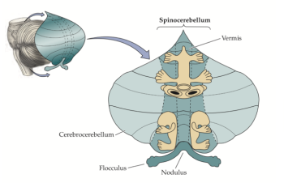
The coordination of movement by the cerebellum is possible thanks to its high interconnectivity. It receives inputs about planned movements from the motor cortex, and sensory feedback on the actual movement. This allows the comparison between planned and actual performance of the movement. It produces a precise computation that uses sensory information to adjust the ongoing movement as a part of a feedforward predictive control system.
Key Takeaways
- The cerebellum plays a role in construction of movement. Cerebellar lesions dramatically affect movement, because the timing, scaling and pattern of muscle contractions is inappropriate
- The cerebellum is important in translating ‘sensory’ signals into ‘motor’ coordinates, as part of a feedforward predictive control system
- It also influences motor learning, contributing to the automatisation of movements.
Basal ganglia
The basal ganglia are structures that modulate the motor function at the highest levels. They receive extensive connections from the neocortex and feedback to the motor cortex. The basal ganglia participate in a wide range of functions, including action selection, association and habit learning, motivation, emotions and motor control. In this chapter we will look into their functional organisation and focus on the mechanism by which they allow the selection of movement and modulate movement force.
The basal ganglia are five interconnected nuclei within the forebrain located below the cerebral cortex. The main nuclei are the striatum (which means ‘with stripes’) formed by the putamen, the caudate nuclei, and the globus pallidus. And two midbrain nuclei, the substantia nigra and the subthalamic nucleus (Figure 5.13).
The ganglia receive inputs from all areas of the neocortex, comprising the motor cortex, as well as inputs from the limbic areas, which are involved in emotions, like fear. The nuclei project back to the motor cortex via relays in the thalamus influencing the descending commands from the primary motor cortex. There are no direct connections from the basal ganglia with the spinal cord.
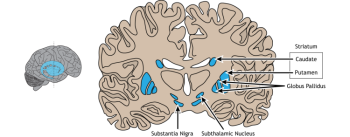
Functional network organisation: the volume hypothesis
In the volume control theory the globus pallidus acts like a volume dial. It projects indirectly to the motor cortex via the thalamus. The globus pallidus is inhibitory: this means that it inhibits the thalamus when activated. If this happens, the thalamus, which is excitatory, does not activate the motor cortex and this results in less movement. On the other hand, if the internal globus pallidus is inhibited, inhibition on the thalamus is released and movement can occur. This model suggests that it is through this ‘volume control’ that we make choices and select appropriate goals while rejecting less optimal options.
In this schema of the functional organisation of the basal ganglia, the pathways towards the internal globus pallidus are critical in setting its output. There are direct and indirect pathways.
The direct pathway

In the direct pathway (Figure 5.14a), the striatum (caudate/putamen) is directly connected to the internal globus pallidus and the substantia nigra. If the direct pathway is activated, it inhibits the internal globus pallidus, thus removing the inhibition of the thalamus. This facilitates movement by increasing thalamic excitation of the motor cortex.
Blue is inhibitory, red is excitatory, the thickness of the line indicates the strength of the connections.
The indirect pathway

In the indirect pathway (Figure 5.14b), the striatum projects to the external globus pallidus and subthalamic nucleus.
The striatum inhibits the external globus pallidus. This disinhibits the subthalamic nucleus which excites the internal globus pallidus. This results in less motor cortex excitation.
Dopamine also plays a role in the modulation of movements. Dopaminergic inputs to the basal ganglia from the substantia nigra pars compacta facilitate movement via both the direct and indirect pathways. In the direct pathway, activation of D1 dopamine receptors on neurons in the striatum enhances striatal inhibition of the internal globus pallidus, disinhibiting the thalamus and facilitating motor outputs. Conversely, in the indirect pathway, dopamine activates D2 dopamine receptors in the external globus pallidus to reduce its inhibition. The external globus pallidus can therefore more strongly inhibit the subthalamic nucleus, reducing excitation of the internal globus pallidus and decreasing inhibition of the thalamus, further facilitating motor outputs.
Overall, the balance between the direct and indirect pathways controls the ‘volume dial’ that determines the strength of the basal ganglia output to the thalamus, thus acting to modulate the excitatory input received by the motor cortex to select and regulate movement.
Diseases of the basal ganglia
Damage to the basal ganglia can produce two main types of motor symptoms:
- Hyperkinetic symptoms, where there is excessive involuntary movement, as seen in Huntington’s chorea.
- Hypokinetic symptoms, where there is a paucity of movement, as seen in Parkinson’s disease.
Huntington’s disease is a genetic disorder characterised by uncontrolled movements (chorea). The symptoms are excessive spontaneous movements, irregularly timed, randomly distributed and abrupt in character. It is followed by dementia and ultimately death.
There is evidence that the motor symptoms are originated by neuronal death that can reach up to 90% in the striatum (caudate/putamen). This primarily disrupts the indirect pathway, where inhibition of the external globus pallidus is lost, producing a tonic inhibition of the subthalamic nucleus. This in turn reduces the inhibitory output to the thalamus, thus producing excessive movement.
The symptoms can be treated with antipsychotics that block dopamine transmission (e.g. clozapine) and decrease motor activity; as well as anxiolytics or anticonvulsants that increase inhibition via GABA (e.g. clonazepam).
Parkinson’s disease is a slow progressive disorder that affects movement, muscle control and balance. It has three main symptoms: resting tremor, stiffened muscles, and slowness of movement that results in small shuffling steps.
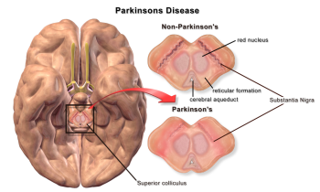
It is produced by a loss of dopaminergic neurons in the substantia nigra and the levels of dopamine in its output regions are dramatically reduced (Figure 5.15).
Dopamine normally facilitates movement. When the levels are decreased, both the direct and indirect pathway are affected, increasing the inhibitory output of the basal ganglia and reducing motor activity.
Pharmacological treatment of Parkinson’s disease largely focuses on restoring dopamine levels. Dopamine cannot be administered directly since it does not cross the blood-brain barrier, so does not reach the brain when systemically administered. Instead the dopamine precursor L-DOPA is used, which is taken up by the brain and becomes active upon conversion to dopamine by dopadecarboxylase. Dopamine receptor agonists, or inhibitors of dopamine breakdown have also been used. These treatments are beneficial, but require gradual increases in dose over time, which can generate many side effects.
Alternatively, stimulation of the subthalamic nucleus or internal globus pallidus through implanted electrodes (‘deep brain stimulation’) has been introduced as a treatment for Parkinson’s disease. This treatment can help relieve symptoms of Parkinson’s disease, but it is not clear whether this is by inhibiting, exciting or more broadly disrupting abnormal information flow through the direct and indirect pathways (Chiken and Nambu, 2016).
See YouTube video ‘Medtronics Deep Brain Stimulation Patient’: https://www.youtube.com/watch?v=_tkmSn2m0Ck
Key Takeaways
- The basal ganglia contribute to high level motor control
- Inputs to the basal ganglia arise from many regions of the cerebral cortex, outputs are directed to the frontal lobe
- Disorders of the basal ganglia involve limited or excessive movement as exemplified by Parkinsonism and chorea, respectively
- The basal ganglia also have important non-motor functions.
References
Brown, T. G. (1911). The intrinsic factors in the act of progression in the mammal. The Proceedings of the Royal Society B, 84(572), 308-319. https://doi.org/10.1098/rspb.1911.0077
Chiken, S., & Nambu, A. (2016). Mechanism of deep brain stimulation: Inhibition, excitation, or disruption? The Neuroscientist, 22(3), 313-322. https://doi.org/10.1177/1073858415581986
Elbert, T., Pantev, C., Wienbruch, C., Rockstroh, B., & Taub, E. (1995). Increased cortical representation of the fingers of the left hand in string players. Science, 270(5234), 305-307. https://doi.org/ 10.1126/science.270.5234.30
Filh P., & Thomas B. (2010). Recognizing human gait types. In Ude, A. (Ed.), Robot Vision (pp. 183-208). InTech Open. https://doi.org/10.5772/9293
Graziano, M. S. A. (2016). Ethological action maps: a paradigm shift for the motor cortex. Trends in Cognitive Sciences, 20(2), 121-132. https://doi.org/10.1016/j.tics.2015.10.008
Holmes, G. (1922). The Croonian lectures on the clinical symptoms of cerebellar disease and their interpretation. Lecture I. The Lancet, 199(5155), 1177-1182. https://doi.org/10.1016/S0140-6736(00)55081-8
Holmes, G. (1922). The Croonian lectures on the clinical symptoms of cerebellar disease and their interpretation. Lecture II. The Lancet, 199(5156), 1231-1237. https://doi.org/10.1016/S0140-6736(01)33076-3
Kandel E., Schwartz, J., & Jessell, T. (2012) Principles of neural science (5th Ed.). McGraw-Hill Education.
Kleim, J. A., Hogg, T. M., VandenBerg, P. M., Cooper, N. R., Bruneau, R., & Remple, M. (2004). Cortical synaptogenesis and motor map reorganization occur during late, but not early, phase of motor skill learning. Journal of Neuroscience, 24(3), 628-633. https://doi.org/10.1523/JNEUROSCI.3440-03.2004
Kolb, B., Whishaw, I. Q., & Teskey, G. C. (2019). An introduction to brain and behavior (6th ed.). Macmillan Learning.
Nudo, R. J., Wise, B. M., SiFuentes, F., & Milliken, G. W. (1996). Neural substrates for the effects of rehabilitative training on motor recovery after ischemic infarct. Science, 272(5269), 1791-1794. https://doi.org/10.1126/science.272.5269.1791
Penfield, W., & Boldrey, E. (1937). Somatic motor and sensory representation in the cerebral cortex of man as studied by electrical stimulation. Brain, 60(4), 389-443. https://doi.org/10.1093/brain/60.4.389
Sherrington, C. S. (1910). Flexion-reflex of the limb, crossed extension-reflex, and reflex stepping and standing. The Journal of Physiology, 40(1-2), 28-121. https://doi.org/10.1113/jphysiol.1910.sp001362
Sherrington, C. S. (1932). Inhibition as a coordinative factor. Nobel Lecture. https://www.nobelprize.org/prizes/medicine/1932/sherrington/lecture/
Taub, E. (2012). The behavior-analytic origins of constraint-induced movement therapy: An example of behavioral neurorehabilitation. The Behavior Analyst, 35, 155–178. https://doi.org/10.1007/BF03392276
Ziemann, U. (2005). Improving disability in stroke with RTMS. The Lancet Neurology, 4(8), 454-455. https://doi.org/10.1016/S1474-4422(05)70126-5
Central Nervous System
Ethological: related to the behaviour in natural conditions.